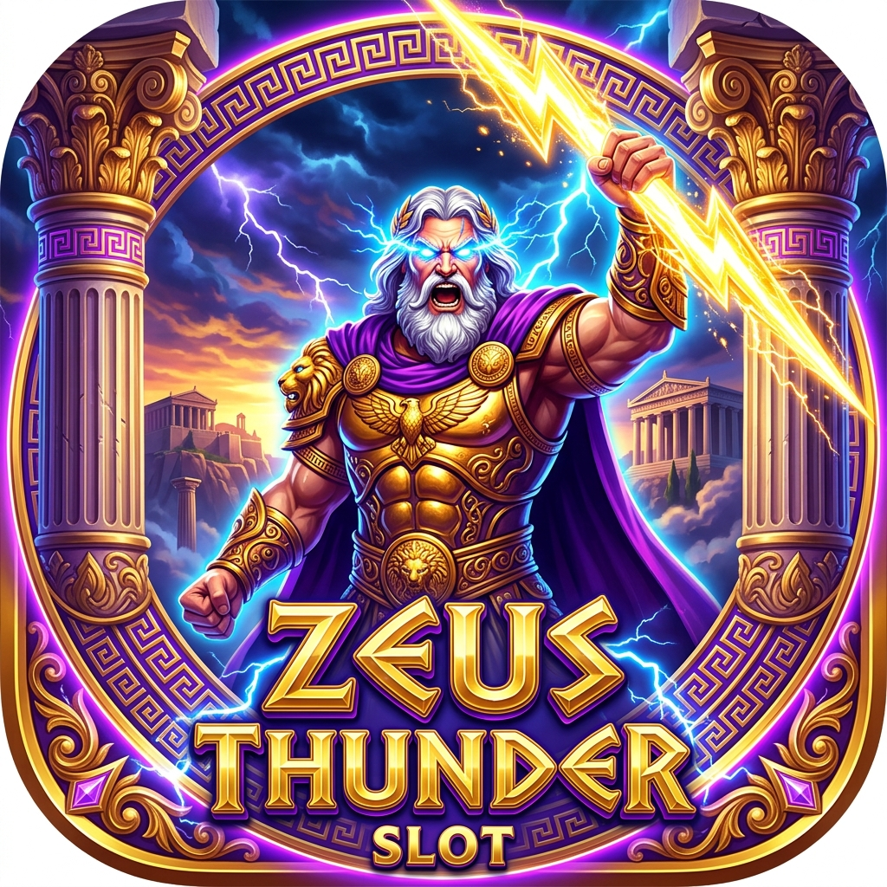
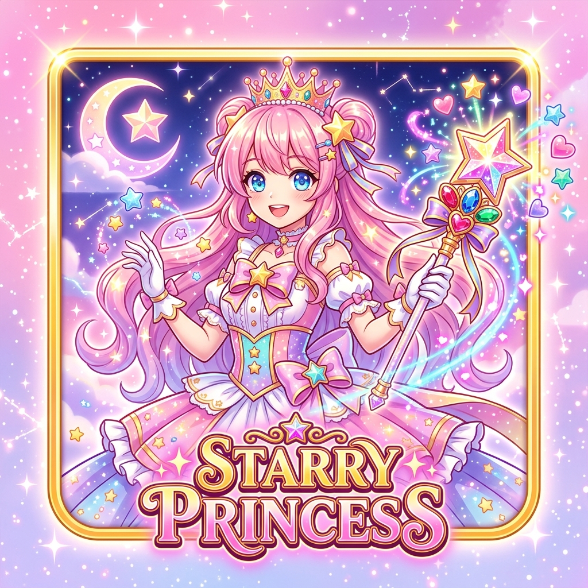
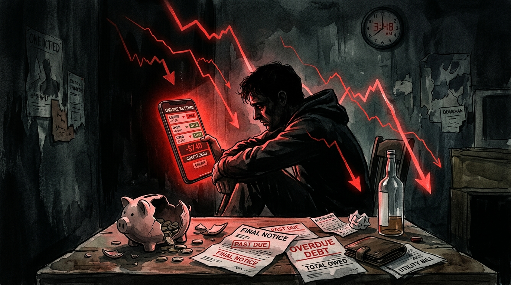

Deposit kilat 3 detik via QRIS, E-Wallet & Bank. Dapatkan sensasi kemenangan tanpa batas dengan bocoran pola slot paling akurat hari ini!
Pilih salah satu tombol putaran di bawah untuk melihat secara langsung trik visual & manipulasi algoritma yang digunakan bandar judi online dalam memperdaya neurokimia otak manusia.
Game-game ini menggunakan grafis atraktif dan maskot mitologi untuk menyamarkan mekanisme penyedotan uang secara sistematis.

RTP 98.8%win_cap_ceiling di server. Akun baru diberi kemenangan kecil di awal sebagai umpan (hook), setelah deposit membesar, pengali tinggi dimatikan otomatis.

RTP 97.9%Pilih tab di bawah untuk membaca kajian sistematis tentang manipulasi backend, spiral kemiskinan, jerat hukum di Indonesia, dan mitigasi kecanduan.
Banyak pemain meyakini bahwa mesin slot online menggunakan generator angka acak murni yang independen. Namun pada situs judi ilegal tanpa regulasi resmi, bandar memiliki akses dashboard backend lengkap dengan fitur:

Kecanduan judi online diakui oleh WHO dalam ICD-11 sebagai gangguan mental patologis (Gambling Disorder). Perjalanan korbannya hampir selalu mengikuti 4 tahapan mematikan berikut:
Di Indonesia, seluruh aktivitas perjudian konvensional maupun online adalah ILEGAL tanpa pengecualian. Baik penyelenggara, promotor (influencer/afiliator), maupun pemain dapat dijerat pasal berlapis:
"Setiap Orang yang dengan sengaja dan tanpa hak mendistribusikan, mentransmisikan, dan/atau membuat dapat diaksesnya Informasi Elektronik dan/atau Dokumen Elektronik yang memiliki muatan perjudian..."
Pemain judi yang turut serta bermain di tempat umum maupun menggunakan sarana internet dapat dijerat pidana penjara paling lama 4 tahun atau denda pidana.
Klik tanda plus (+) di samping untuk membuka fakta ilmiah di balik masing-masing mitos:
Jika Anda, anggota keluarga, atau rekan Anda sedang berjuang melawan dorongan kecanduan judi online atau terjerat hutang, segera hubungi lembaga-lembaga terpercaya berikut untuk mendapatkan pendampingan psikologis dan hukum secara gratis dan rahasia: